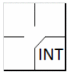

Une interférence défensive est commise par un défenseur lorsqu’il gêne un batteur pour l’empêcher de frapper un lancer [Définition des termes de l'OBR].
Le batteur devient coureur et a le droit à la première base sans danger d’être retiré (à condition qu’il avance vers et touche la première base) quand … Le receveur ou un défenseur quelconque le gêne.
Si un jeu suit l’interférence, le manager de l’équipe en attaque peut aviser l’arbitre de plaque qu’il choisit de décliner la pénalité pour interférence et qu’il accepte le jeu. Ce choix doit être fait immédiatement à la fin du jeu. Cependant si le batteur se rend à la première base sur un coup sûr, une erreur, une base sur balles, parce qu’il a été touché par la balle ou de toute autre manière et que tous les autres coureurs avancent au moins d’une base, le jeu continue sans qu’il ne soit tenu compte de l’interférence. [OBR 5.05(b)(3)].
|
 |
L’abréviation à utiliser pour l’avancement du frappeur en première base est « INT », et cela compte comme une erreur contre le receveur (ou le joueur de champ ayant commis l’interférence). L’interférence ne compte pas comme un passage au bâton. |